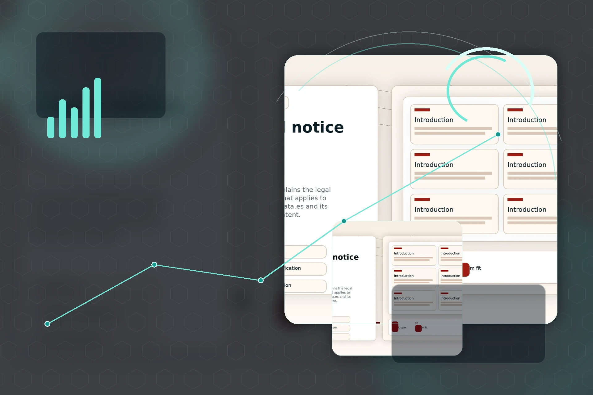

Skip to content
Home
About
Solutions
Services
System
Contact

404
Page not found
This route does not exist or has changed. Return to the main system.
Back to home
Solutions
CRM architecture
Pipeline clarity
Automation control
Operating view
Connected system
CRM model
structured
Pipeline
readable
Automation
orchestrated
Data
clean
Signals
prioritized
Follow-up
consistent
Rotata
Back to home
Consult
↑
WA